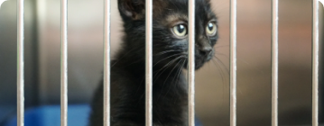

Добряши помогают котикам
Матвей Правосудов · Помощь нужна каждый месяц
Сбор закончится через 5 дней
Привет-привет, добряш!
Я создал это событие, чтобы показать какие у меня прекрасные добряши и буду счастлив, если получится вдохновить кого-нибудь хотя бы на маленький перевод в пользу фонда Юна.
◾ Если получится собрать 1 000 рублей, то это будет 5 обработанных животных от блох и клещей.
◾ Собранные 5 000 рублей превратятся в 25 кг корма для подопечных фонда.
◾ А 10 000 рублей позволят провести курс занятий с кинологом по социализации сложной собаки. Чтобы она легче нашла свой дом.
В благотворительности не бывает маленьких сумм, поэтому если вы хотите помочь, то переведите любую сумму, будь-то 10 рублей или 1000 💚